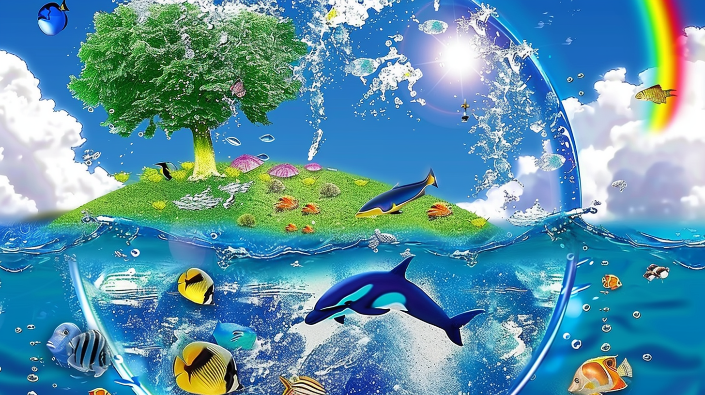
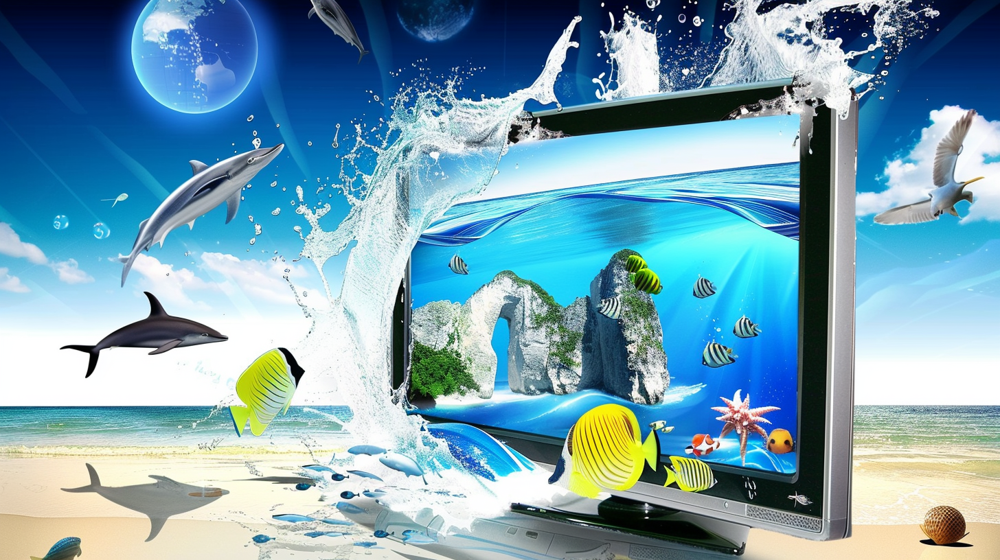
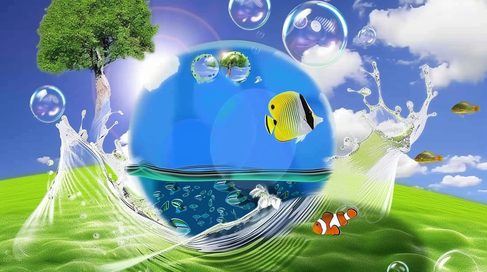
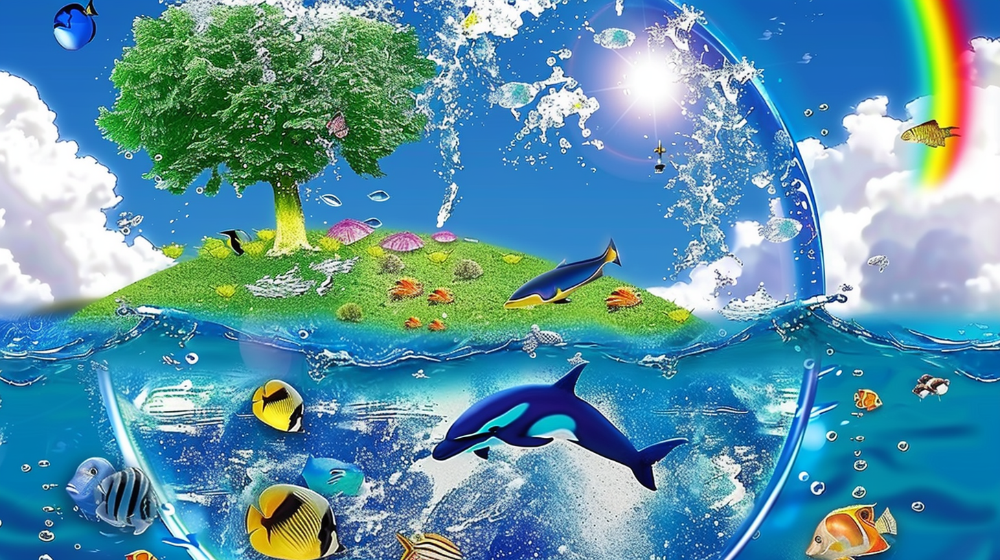
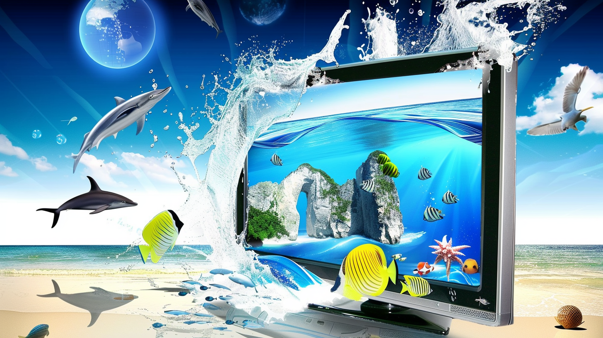
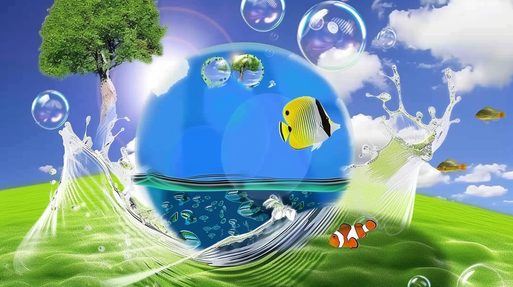

YouTube 2006
Los primeros vídeos virales y la era del contenido casero. Mira este vídeo full nostalgia en una computer room de los 00's
 





Un viaje visual por los primeros años del internet social
Los primeros vídeos virales y la era del contenido casero. Mira este vídeo full nostalgia en una computer room de los 00's
Estados, muros y el inicio de las redes sociales masivas.
Trollface, Rage Comics y humor simple pero efectivo.
Los buenos años del internet

| Año | Plataforma | Evento |
|---|---|---|
| 2005 | YouTube | Lanzamiento |
| 2008 | Popularización | |
| Memes | Explosión viral | |
| Redes Sociales y su 'Boom' | ||